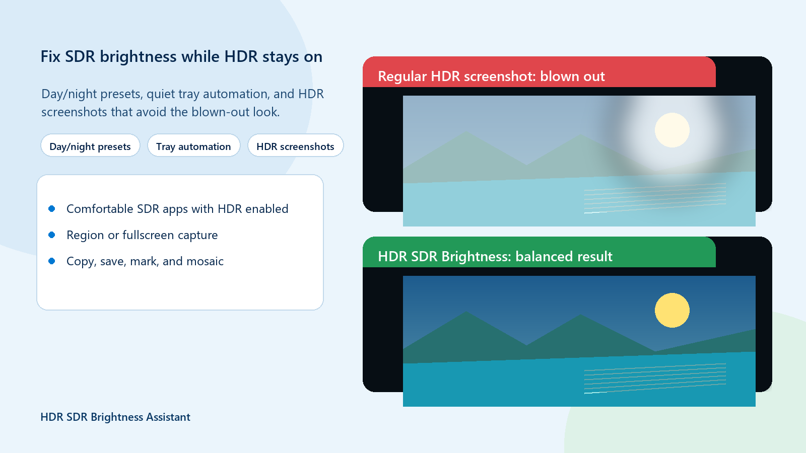

1
Capture
Capture a region or the full screen while Windows HDR stays enabled.
Windows HDR screenshot problem
Regular capture tools can turn HDR content pale or overexposed when you share it as an ordinary image. HDR SDR Brightness Assistant creates a share-ready SDR PNG while Windows HDR stays enabled.

What is happening
HDR display values need tone mapping before they can be represented well in an ordinary SDR image. Without that conversion, highlights may look pale, clipped, or overexposed when the screenshot is shared in an SDR app.
Three-step workflow
The app handles the conversion needed for an ordinary image, then gives you practical tools to finish it before sharing.
Capture a region or the full screen while Windows HDR stays enabled.
Create a tone-mapped, share-ready SDR PNG for ordinary apps and websites.
Copy, save, mark, or mosaic the image before you send it.


More than screenshots
Set separate day and night SDR brightness values, follow Windows Night Light or a fallback schedule, and restore your preferred level when Windows or another app changes it. HDR games and video can remain HDR.
Straightforward purchase
The Microsoft Store version is a paid app with a full-feature trial and a one-time purchase. There is no subscription and there are no in-app purchases.
Questions and limits
HDR display values need tone mapping before they can be represented well in an ordinary SDR image. A direct capture may therefore look pale or overexposed when shared.
No. HDR SDR Brightness Assistant can capture a region or the full screen while Windows HDR remains enabled.
No. The export is an ordinary SDR PNG intended for sharing and does not preserve the complete HDR signal.
No. It does not replace Windows HDR Calibration or display calibration. Calibration and the monitor's HDR mode still affect what appears on your screen.
Yes. The same tray app supports separate day and night SDR brightness values, Windows Night Light, a fallback schedule, and automatic brightness recovery.
Microsoft Store
Use the full-feature trial, then make a one-time purchase if the capture and SDR brightness workflows fit your setup.